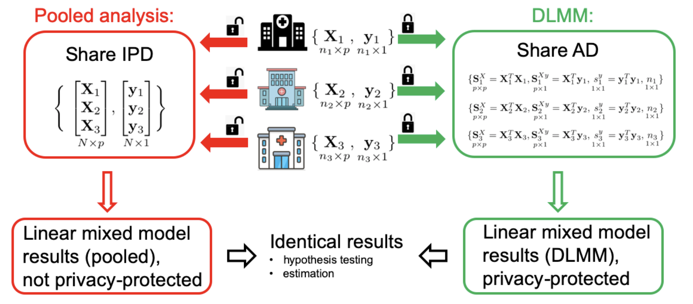

Multi-view data analysis
Multi-view (or multi-modal) data contains multiple sets of features, such as patients’ -omics, imaging, behavior questionnaire and clinical data. Integrating multi-view data could improve variable selection, dimension reduction and prediction. My dissertation focuses on improving the prediction of multi-view data using reduced-rank models.
Canonical Variate Regression for multi-view covariates.
It connects the unsupervised canonical correlation analysis (CCA) and generalized reduced-rank regression (RRR), see Figure (a). Also check the R package CVR on CRAN.
 |
Leveraging mixed-type and incomplete outcomes via a generalized reduced rank regression for multi-view responses.
The response variables are dependent, but could follow different distributions (i.e. gaussian, binomial, Poisson) and subject to missing values, see Figure (b). Also check the R package rrpack on CRAN.
Distributed learning
Data may be collected from subjects that are distributed at multiple sites. Combining these (horizontally) distributed data sets enable analyses to be potentially conducted with larger sample size and better generalizability. A typical example is the healthcare data (e.g. EHRs or medical claims) that are stored at multiple institutions within a clinical research network. However, due to privacy regulations such as HIPAA, direct sharing of individual patient-level data (IPD) across institutions may be challenging.
I work on developing privacy-protected distributed algorithms (PDA) that require each site to contribute only aggregated data (AD) in a few rounds. Using PDAs can obtain close (or identical) estimates to the “pooled analysis” that uses IPD from all sites, especially for rare outcomes (e.g. rare diseases). The heterogeneity across sites is also taken into account when developing some PDAs. See an example of the distributed linear mixed model (DLMM). This algorithm has been used to integrate 11 collaborative data sources worldwide (N=120,609) to investigate the associations between demographic and clinical characteristics and length of hospital stay in COVID-19 patients.
|  |
Check out the pda package at Github, including the ODAL algorithm for fitting logistic regression, and the ODAC algorithm for fitting Cox regression, among others.
Meta-analysis
A meta-analysis is a systematic review procedure that uses statistical methods (e.g. inverse variance weighted average) to combine the results of multiple scientific studies (e.g. efficacy and/or safety of certain drugs). Novel statistical methods are developed for the problems such as publication bias and complex designs.
Collaborations
Cancer clinical trials
Opioid use and mental health
Pharmacovigilance: vaccine and drug safety
Rare neurological disorders
Healthcare quality rating